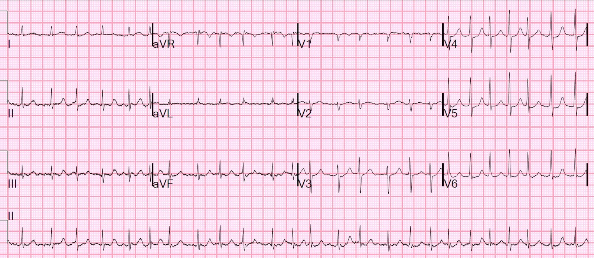
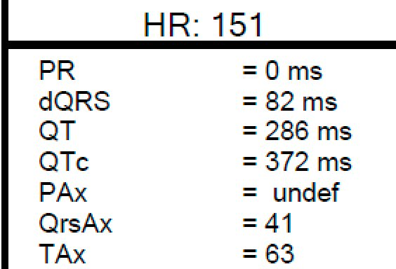
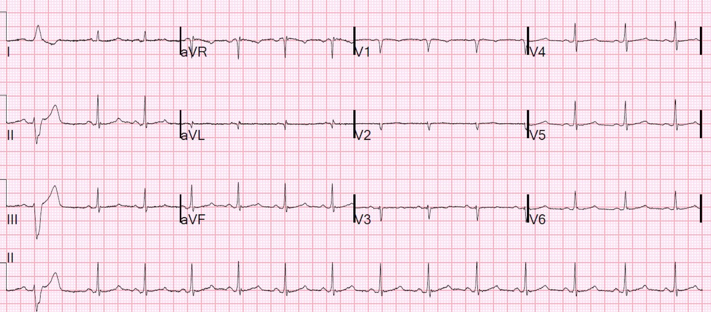
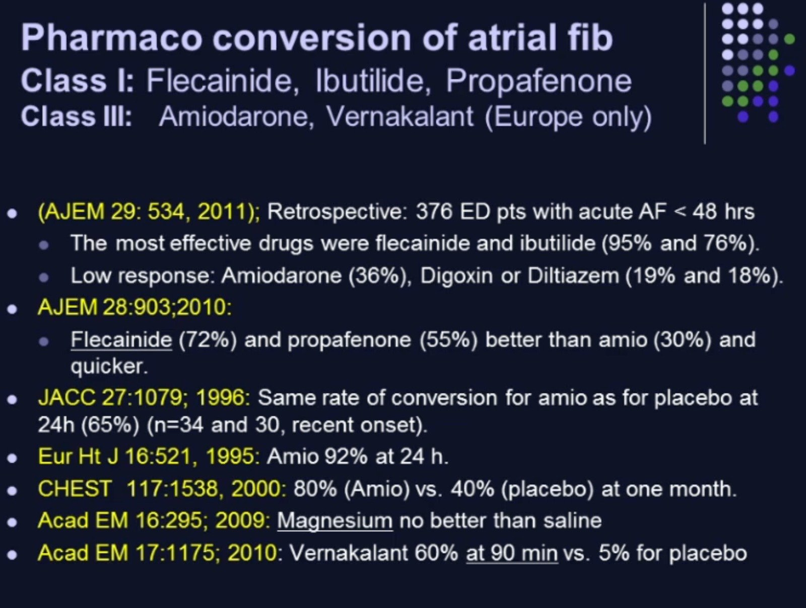

12/02/2021 — Làm gì khi rung nhĩ đáp ứng thất nhanh không chuyển nhịp được bằng sốc điện. Và đo QT trong rung nhĩ như thế nào?
Bản dịch tiếng Việt của bài "What to do when Atrial Fib with RVR will not Electrically Cardiovert. And how do you measure the QT in Atrial Fib?" – Dr. Smith’s ECG Blog. Giữ nguyên toàn bộ 4 hình ảnh của bản gốc.
Bệnh nhân nam trung niên này có tiền sử rung nhĩ kịch phát (paroxysmal atrial fibrillation), và vào ngày nhập viện này đột ngột bị hồi hộp đánh trống ngực và ông biết rằng mình lại bị rung nhĩ. Ông đến viện chỉ vài giờ sau khởi phát. Ông than đau tức ngực dữ dội. Đây là điện tâm đồ của ông tại khoa cấp cứu (ED):




Rung nhĩ với tần số thất rất nhanh, dao động từ 130-170.
Có ST chênh xuống mức độ vừa ở V4-V6, nhiều khả năng do thiếu máu cục bộ.
Khoảng QT là bao nhiêu? Số đo của máy tính có đúng không?
Hiệu chỉnh QT trong rung nhĩ như thế nào?
Và điều đó có quan trọng không?
Vì bệnh nhân than đau tức ngực dữ dội, có chỉ định sốc điện chuyển nhịp (cardioversion) ngay. Bệnh nhân được dùng etomidate 10 mg và, sau khi an thần, được sốc điện chuyển nhịp với 200 Joules hai pha. Không có đáp ứng. Vì vậy bệnh nhân được cho 2 g magnesi. Sau đó được sốc điện chuyển nhịp lần nữa. Lại không có đáp ứng.
Bạn sẽ làm gì? Dưới đây là cách xử trí của tôi, và những gì đã làm ở ca này:
Tôi cho 1 mg ibutilide tĩnh mạch trong 10 phút, rồi sốc điện chuyển nhịp lại. Ibutilide chẹn kênh kali chỉnh lưu (potassium rectifier channel), kéo dài tái cực, do đó kéo dài khoảng QT và giúp chuyển nhịp rung nhĩ. Trong 2 nghiên cứu được trích dẫn dưới đây, nếu sốc điện chuyển nhịp không hiệu quả, thì việc lặp lại sốc điện chuyển nhịp sau khi cho 1 mg ibutilide đưa về nhịp xoang ở 100% trường hợp.
Chống chỉ định là: QTc (Bazett) > 480 ms, phân suất tống máu < 30%. Đây chỉ là chống chỉ định tuyệt đối nếu bệnh nhân không cần sốc điện chuyển nhịp cấp cứu do thiếu máu cục bộ nặng, phù phổi, hoặc sốc.
Các chống chỉ định tương đối khác là nồng độ K+ ﹤ 3.5, mEq/L, QT﹥440 ms, và đang dùng các thuốc khác gây kéo dài QT.
Trước khi dùng ibutilide, điều quan trọng là phải đọc phần tóm tắt bài báo trên New England Journal ở cuối trang, và các ghi chú của tôi về nghiên cứu đó.
Nhưng làm thế nào để tính QT hiệu chỉnh trong rung nhĩ?
Các công thức được nêu dưới đây
[công thức cuối (Hodges) được trình bày dưới hai dạng tương đương, một dạng theo tần số tim, như thường thấy, và một dạng theo khoảng RR như cách trình bày các công thức khác].
RR luôn là khoảng RR ĐỨNG TRƯỚC, nghĩa là khoảng QT của một phức bộ được điều chỉnh theo khoảng RR của phức bộ đứng trước.
Khoảng RR tính bằng giây, không phải mili giây!
· Công thức Bazett: QTc = QT / √RR (QT chia cho căn bậc hai của khoảng RR)
· Công thức Fridericia: QTc = QT / √3(RR) (QT chia cho căn bậc ba của khoảng RR)
· Công thức Framingham: QTc=QT+0.154*(1–RR)
· Công thức Hodges: QTc = QT + 1.75*(HR−60)
= QT + 105/RR − 105
QT trên điện tâm đồ này là bao nhiêu?
Sau khi đọc 3 bài báo ở tận cuối trang dưới đây, điều tôi rút ra để ước tính nhanh tại khoa cấp cứu là:
1. xem chuyển đạo II chạy dọc phía dưới
2. Tìm phức bộ có khoảng RR đứng trước dài nhất
3. Quy tắc kinh nghiệm (rule of thumb): Ở phức bộ này, nếu QT ﹤ một nửa khoảng RR đứng trước, thì an toàn
4. Nếu QT ﹥ một nửa RR, thì đo toàn bộ, dùng khoảng RR đứng trước và công thức Fridericia.
Trên điện tâm đồ này:
1) khoảng RR đầu tiên ở chuyển đạo II là dài nhất
2) QT ngay sau khoảng đó là 310 ms. (so với máy tính đo được 286 – không khác biệt mấy)
3) khoảng RR đứng trước đó là 500 ms, tương đương tần số tim 120.
4) Tính QTc theo Fridericia bằng công cụ tính này
= 391 ms
Ca bệnh tiếp diễn:
Chúng tôi nhận thấy QTc của bệnh nhân không quá dài. Chúng tôi làm siêu âm tại giường, cho thấy chức năng tim rất tốt. Nồng độ K bình thường.
Vì vậy chúng tôi cho 1 mg ibutilide tĩnh mạch và sốc điện chuyển nhịp lại, thành công. Xem điện tâm đồ ghi lại bên dưới.
Bệnh nhân được cho xuất viện với thuốc chẹn beta sau khi QTc trở về bình thường. Điểm CHAD2VASC của ông là 2 và điểm HAS BLED là 1, nên ông được bắt đầu dùng Rivaroxaban.
Xem thêm một slide ở cuối trang trình bày dữ liệu so sánh các thuốc chống loạn nhịp khác nhau trong chuyển nhịp rung nhĩ.


QTc bình thường ngay cả sau khi dùng ibutilide, thuốc thường làm QTc kéo dài đáng kể
Tài liệu tham khảo
Dùng ibutilide để hỗ trợ sốc điện chuyển nhịp rung nhĩ
Ibutilide, giống các thuốc chống loạn nhịp nhóm III khác, chẹn dòng kali chỉnh lưu chậm (delayed rectifier potassium current). Phân loại Vaughan Williams
Facilitating Transthoracic Cardioversion of Atrial Fibrillation with
Ibutilide Pretreatment. Hakan Oral, New Engl J Med, ngày 17 tháng Sáu năm 1999;
340(24):1849-54.
https://www.nejm.org/doi/full/10.1056/NEJM199906173402401 (toàn văn bài báo trên New England Journal of Medicine)
Tóm tắt
Bối cảnh. Không phải lúc nào rung nhĩ
cũng chuyển được về nhịp xoang bằng sốc điện chuyển nhịp qua thành ngực.
Chúng tôi khảo sát tác dụng của ibutilide, một thuốc chống loạn nhịp nhóm III,
lên mức năng lượng cần thiết để khử rung nhĩ và đánh giá
giá trị của thuốc này trong hỗ trợ sốc điện chuyển nhịp ở bệnh nhân
rung nhĩ kháng trị với sốc điện chuyển nhịp qua thành ngực
thông thường.
Phương pháp. Một trăm bệnh nhân đã bị rung
nhĩ trong thời gian trung bình (±SD) 117±201 ngày được phân ngẫu nhiên
vào nhóm sốc điện chuyển nhịp qua thành ngực có hoặc không có tiền điều trị bằng 1
mg ibutilide. Chúng tôi thiết kế phác đồ tăng dần, trong đó các cú sốc 50,
100, 200, 300, và 360 J được dùng để sốc điện chuyển nhịp qua thành ngực. Nếu
sốc điện chuyển nhịp qua thành ngực không thành công ở bệnh nhân
chưa được tiền điều trị bằng ibutilide, thì cho ibutilide và
thử sốc điện chuyển nhịp qua thành ngực lại.
Kết quả. Chuyển về
nhịp xoang xảy ra ở 36 trong 50 bệnh nhân không được dùng
ibutilide (72 phần trăm) và ở toàn bộ 50 bệnh nhân được dùng ibutilide
(100 phần trăm, P<0.001). Ở cả 14 bệnh nhân mà sốc điện chuyển nhịp qua thành ngực
đơn thuần thất bại, nhịp xoang được phục hồi khi thử sốc điện chuyển nhịp
lại sau khi dùng ibutilide. Tiền điều trị
bằng ibutilide đi kèm với giảm năng lượng trung bình
cần để khử rung (166±80 J, so với 228±93 J khi không
tiền điều trị; P<0.001). Nhịp nhanh thất đa dạng bền bỉ
xảy ra ở 2 trong 64 bệnh nhân được dùng ibutilide (3
phần trăm), cả hai đều có phân suất tống máu từ 0.20 trở xuống. Tỷ lệ
không còn rung nhĩ sau sáu tháng theo dõi
tương tự nhau ở hai nhóm ngẫu nhiên.
Kết luận. Hiệu quả của
sốc điện chuyển nhịp qua thành ngực trong chuyển rung nhĩ về nhịp
xoang được tăng cường nhờ tiền điều trị bằng ibutilide. Tuy nhiên, nên tránh dùng
thuốc này ở bệnh nhân có phân suất tống máu rất thấp. (N
Engl J Med 1999;340:1849-54.)
Những điểm quan trọng của nghiên cứu này:
Nghiên cứu đưa vào các bệnh nhân bị
rung nhĩ dưới 48 giờ.
Nghiên cứu loại trừ bệnh nhân rung nhĩ
kéo dài hơn 48 giờ, trừ khi đã chứng minh bằng siêu âm tim qua thực quản (TEE) là không có
huyết khối trong nhĩ HOẶC trừ khi đã cho dùng thuốc chống đông 3 tuần trước đó.
Do đó, kết quả áp dụng được cho các bệnh nhân của chúng ta đã rung nhĩ < 48 giờ, hoặc đã
đang dùng thuốc chống đông.
Nghiên cứu loại trừ mọi bệnh nhân có QTc >
480ms vì ibutilide có thể gây xoắn đỉnh (torsade). Theo những gì tôi thấy, họ không nêu công thức hiệu chỉnh đã dùng, cũng không nêu cách đo QT thô và đo ở chuyển đạo nào.
Liều dùng là 1mg trong 10
phút.
2 trong 64 bệnh nhân dùng ibutilide bị xoắn đỉnh (torsades de pointes). Cả hai đều có phân suất
tống máu thấp, <20% và cả hai đều được kiểm soát dễ dàng.
Các tác giả
khuyến cáo không dùng ibutilide cho chỉ định này ở bệnh nhân ổn định nếu
EF < 30%. Tuy nhiên, đây vẫn là một lựa chọn ở bệnh nhân không ổn định.
Ibutilide làm tăng QTc đáng kể (432+/-37 trước so với
482+/-49 sau).
Dù điểm này không được bàn trong bài báo, tôi
sẽ không cho bệnh nhân như vậy về nhà trừ khi QT đã được điều chỉnh, nhờ thời
gian hoặc magnesi.
_____________________
Nghiên cứu tại khoa cấp cứu này cũng có tỷ lệ chuyển nhịp 100% khi phối hợp ibutilide với sốc điện chuyển nhịp.
Domanovits H, Schillinger M, Thoennissen J, và cs. Termination of recent-onset atrial fibrillation/flutter in the emergency department: a sequential approach with intravenous ibutilide and external electrical cardioversion. Resuscitation [Internet] 2000;45(3):181–7. Truy cập tại: http://dx.doi.org/10.1016/s0300-9572(00)00180-5
__________________________
2 nghiên cứu dưới đây dùng ibutilide đơn thuần, không sốc điện, và có tỷ lệ chuyển nhịp thấp hơn đáng kể.
Vinson DR, Lugovskaya N, Warton EM, và cs. Ibutilide Effectiveness and Safety in the Cardioversion of Atrial Fibrillation and Flutter in the Community Emergency Department. Ann Emerg Med [Internet] 2018;71(1):96–108.e2. Truy cập tại: http://dx.doi.org/10.1016/j.annemergmed.2017.07.481
Trong nghiên cứu tại khoa cấp cứu đăng trên Annals of Emergency Medicine này, các tác giả dùng ibutilide đơn thuần, không phối hợp với sốc điện chuyển nhịp, và tỷ lệ thành công thấp hơn nhiều.
____________________________
Efficacy and Safety of Repeated Intravenous Doses of Ibutilide for Rapid Conversion of Atrial Flutter or Fibrillation. Stambler BS và cs. Circulation 1996;94(7):1613–21. Truy cập tại: https://doi.org/10.1161/01.CIR.94.7.1613
Dùng ibutilide đơn thuần, không sốc điện, có hiệu quả, nhưng kém xa so với ibutilide + sốc điện. Nghiên cứu này, dùng lần truyền thứ 2 liều 1 mg nếu cần, có tỷ lệ chuyển nhịp 30% với rung nhĩ và 60% với cuồng nhĩ, hiệu quả tốt hơn ở những người rung nhĩ trong thời gian ngắn hơn. Tỷ lệ chuyển nhịp với giả dược là 2%. Như vậy, có thể cho an toàn lần truyền thứ hai liều 1 mg. Nghiên cứu loại trừ bệnh nhân có QTc trên 440 ms. Ngừng truyền nếu QTc vượt quá 600 ms. Cũng như nghiên cứu trước, phương pháp đo QT và công thức hiệu chỉnh không được nêu rõ.
Tác động của ibutilide trên điện tâm đồ
Khoảng QT và QTc kéo dài đáng kể (P<.0001) so với ban đầu ở các bệnh nhân điều trị bằng ibutilide. Từ khoảng QT và QTc ban đầu lần lượt là 347±45 và 414±31 ms, liều ibutilide 1.0 mg/0.5 mg kéo dài các khoảng này thêm lần lượt 73±75 và 62±66 ms, lên 420±78 và 477±62 ms, ở phút thứ 30 sau khi bắt đầu truyền. Từ khoảng QT và QTc ban đầu là 343±51 và 416±31 ms, liều ibutilide 1.0 mg/1.0 mg kéo dài các khoảng này thêm 71±82 và 63±68 ms, lên 414±92 và 478±70 ms ở phút thứ 30. Những thay đổi QT và QTc này lớn hơn đáng kể (P<.0001) so với thay đổi ở nhóm giả dược (5±29 và 9±34 ms). Thời gian QRS không thay đổi đáng kể ở các nhóm liều từ lúc ban đầu đến phút thứ 30.
Tác dụng gây loạn nhịp (Proarrhythmia)
Nhịp nhanh thất đa dạng xuất hiện ở 15 trong 180 bệnh nhân điều trị bằng ibutilide (8.3%) và không xuất hiện ở bệnh nhân nào dùng giả dược. Trong số bệnh nhân điều trị bằng ibutilide, 7 bệnh nhân cũng có các cơn VT đơn dạng không bền bỉ. Ở 3 bệnh nhân (1.7%), VT đa dạng bền bỉ và cần sốc điện chuyển nhịp bằng dòng điện một chiều (DC), và ở 12 bệnh nhân (6.7%), VT đa dạng không bền bỉ và tự hết hoặc hết khi ngừng ibutilide (Bảng 3). Sáu bệnh nhân bị VT đa dạng được cho magnesi sulfat (2 đến 4 g tĩnh mạch) để phòng tái phát. Ở tất cả bệnh nhân, cơn VT đa dạng đầu tiên xảy ra hoặc trong khi truyền hoặc ngay sau khi kết thúc lần truyền ibutilide cuối cùng. Mười một trong 15 cơn (73%) xảy ra trong khi hoặc trong vòng 10 phút sau liều ibutilide 1.0 mg đầu tiên, và 4 cơn xảy ra ở 144 bệnh nhân (2.8%) được dùng liều ibutilide thứ hai 0.5 hoặc 1.0 mg.
Đo QT hiệu chỉnh trong rung nhĩ
Dash A, Torado C, Paw N, Fan D, Pezeshkian N, Srivatsa U. QT correction in atrial fibrillation – Measurement revisited. J Electrocardiol [Internet] 2019;56:70–6. Truy cập tại: https://www.sciencedirect.com/science/article/pii/S0022073619302237
Tóm tắt
Bối cảnh: Khoảng QT đo trên điện tâm đồ (ECG) thay đổi theo khoảng RR, gây khó khăn cho việc tính QT hiệu chỉnh (QTc) trong rung nhĩ (AF).
Mục tiêu: Xác định chuyển đạo lý tưởng, số phức bộ và công thức đo QTc có tương quan tốt nhất giữa AF và nhịp xoang (SR).
Quy trình: Chúng tôi xác định các điện tâm đồ của bệnh nhân AF trước và sau khi chuyển về SR. Sau khi loại trừ các bệnh nhân dùng thuốc và có tình trạng lâm sàng làm kéo dài khoảng QT, QTc được tính từ tất cả các chuyển đạo bằng các công thức: Bazett (BF), Fridericia (FF), Framingham(FrF), Hodges (HF), Saige (SF) và Rautaharju (RF) trong AF và SR. Sau khi xác định chuyển đạo có tương quan tuyến tính tốt nhất, chúng tôi tính QTc theo khoảng RR dài nhất, theo nhiều phức bộ QRS và theo khoảng RR trung bình tự động trong AF rồi so sánh với SR.
Kết quả: Ở 52 bệnh nhân (nam 69%, tuổi 63 ± 9 năm), QTc đo từ chuyển đạo II tương quan tốt nhất với SR ở đa số công thức. QTc luôn ngắn hơn với các công thức tuyến tính. Trong khi BF ước tính QTc quá cao, FF là tối ưu khi so sánh AF với SR (416 ± 33 so với 411 ± 38 ms, ns), dù tính từ khoảng RR đơn lẻ, nhiều khoảng RR hay khoảng RR trung bình tự động. Phân tích Bland Altman giữa QTc tự động trung bình và hiệu số của từng QTc tự động riêng lẻ cho thấy QTc tính bằng FF ít biến thiên nhất.
Kết luận: BF trong phần mềm thương mại không lý tưởng để đo QTc trong AF; có thể dùng công thức Fridericia ở chuyển đạo II với RR trung bình từ số đo điện tâm đồ tự động để tính QTc.
___________________
Musat DL, Adhaduk M, Preminger MW, và cs. Correlation of QT interval correction methods during atrial fibrillation and sinus rhythm. Am J Cardiol [Internet] 2013;112(9):1379–83. Tháng Mười Một 2013. Truy cập tại: http://dx.doi.org/10.1016/j.amjcard.2013.06.027.
Các tác giả này so sánh số đo QT theo Bazett, Fridericia và Framingham trên 54 bệnh nhân rung nhĩ. Họ đo QTc khi bệnh nhân đang rung nhĩ và đo lại sau khi chuyển nhịp, khi bệnh nhân đã về nhịp xoang. Họ đo ở chuyển đạo có QT dài nhất, và đo tất cả các phức bộ trong khoảng thời gian 10 giây (một điện tâm đồ 12 chuyển đạo), rồi lấy trung bình. Khoảng RR cũng là trung bình trong 10 giây. Họ thấy công thức Bazett ước tính quá cao QTc trong rung nhĩ, trong khi công thức Fridericia chính xác nhất. Họ không trả lời câu hỏi nan giải là làm sao đo và hiệu chỉnh QT thật nhanh; câu trả lời truyền thống là hiệu chỉnh khoảng QT bằng khoảng RR đứng trước.
__________
Tooley J, Ouyang D, Hadley D, và cs. Comparison of QT Interval Measurement Methods and Correction Formulas in Atrial Fibrillation. Am J Cardiol [Internet] 2019;123(11):1822–7. Truy cập tại: http://dx.doi.org/10.1016/j.amjcard.2019.02.057
“Xác định QT từ trung bình 5 nhát cho QTc trong AF cao hơn 19.0 ms so với SR (khoảng tứ phân vị 0.30 đến 43.7). Sau khi hiệu chỉnh ảnh hưởng tồn dư của HR lên QTc, không có khác biệt đáng kể giữa QTc trong AF và SR. Tóm lại, đo QT qua nhiều nhát cho số đo QT chính xác hơn trong AF. Khác biệt giữa QTc trong AF và SR tồn tại là do công thức hiệu chỉnh theo HR chưa hoàn hảo chứ không phải do tác động độc lập của AF.”


Đây là một slide bạn có thể xem ở phút 43:50 trong bài giảng năm 2014 của tôi về SVT, bao gồm cả rung nhĩ.
https://drsmithsecgblog.com/2014/09/one-hour-lecture-supraventricular.html (bài giảng một giờ về nhịp nhanh trên thất)